Positivo — disponibilidade
P1 — Bloqueante (CA-01)
- Ambiente: HML AXA —
https://axa-hml-faturamento.nsseg.com.br/login/ Ind_Existe_tb_ddr_tom_cit = Sna basesmt-hom-citweb-axa(confirmado 28/07)- Usuário
FREDcom acesso ao módulo Nacional
- Acessar
https://axa-hml-faturamento.nsseg.com.br/login/e fazer login comFRED/ •••• (senha no.env—HML_AXA_CITWEB_PASS) - No menu superior clicar em Nacional
- Clicar em Averbação → Recálculo de Averbações
- Capturar o rodapé da tela e registrar o número de build (
V 1.0.xxxxxx.xxxx) - Verificar os botões presentes na área de ação do formulário
- Capturar screenshot com os botões legíveis
RecalcularAverbacoesDDR (id btnRecalcularAverbacoesDDR).browser_evaluate: id btnRecalcularAverbacoesDDR presente, formaction /Nacional/RecalculoAverbacoes/RecalcularAverbacoesDDR. Indicativo Ind_Existe_tb_ddr_tom_cit=S na AXA.Ambiente: HML AXA · build V 1.0.260727.1709 · usuário FRED · 28/07/2026 12:0x
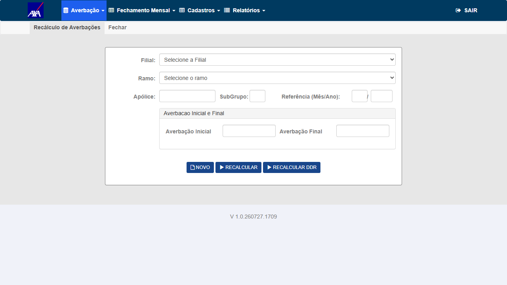
Positivo — happy path
P1 — Bloqueante (CA-01, CA-04)
- Massa M1 criada (linha DDR com
u_cnpj_cpf='40806257000150',i_tpi_cnpj_cpf='T',i_opr_ddr='S', vigência 01/05→01/10/2026) - Snapshot "antes" registrado (seção 4.3)
- Averbações
202617785323e202617785324em movimento aberto, saída em 06/2026, CNPJ40806257000150
Filial 1 · Ramo 54 (RCTR-C) · Apólice 1778531976824 · Subgrupo 1 · Referência 06/2026
- Login em HML AXA e navegar: Nacional → Averbação → Recálculo de Averbações
- Preencher Filial =
1, Ramo =54, Apólice =1778531976824, Subgrupo =1, Referência =06/2026 - Capturar screenshot do formulário preenchido
- Clicar em Recalcular DDR
- Capturar o modal de confirmação com o texto e a quantidade exibida
- Confirmar (Sim) e aguardar o fim do processamento
- Capturar a mensagem de resultado com o texto legível
- Executar o SELECT de verificação (seção 4.3) e comparar com o snapshot "antes"
2), seguido da mensagem "Foram recalculadas 2 averbações com sucesso!".No banco, para as averbações
202617785323 e 202617785324: v_is = 0.00 (branch AXA), v_cml_pmo_cnn = 0, v_cml_pmo_seg = 0, v_tar_pmo_vgm = 0, v_cml_pmo_vgm = 0, v_is_tar = 0.01 e i_opr_ddr = 'S' gravado.A averbação
202617785319 (CNPJ sem DDR) e as de CNPJ 0 permanecem inalteradas.
INNER JOIN passa a produzir linhas candidatas e o predicado MOV.u_cpf_cgc_emb > 0 é avaliado — o que, no banco AXA, estoura o int (ver achado no topo do plano). Previsão: em vez da mensagem de sucesso, a tela pode exibir erro de servidor / "Erro ao tentar enviar os dados". Executar com o painel Network aberto e registrar o status HTTP. Se confirmado: REPROVADO + Task de defeito.DDR cadastrada por CNPJ TOTAL (14 dígitos) pela própria tela Apólice RCTR-C → PI / DDR: CNPJ
18.054.045/0001-04, Tipo de CNPJ = Total, Operação = Sub Contratação, vigência 01/05/2026→01/05/2027 (apólice 1778531227015, filial 1, subgrupo 1).RECALCULAR DDR ref
06/2026: modal “Será recalculada 1 averbação. Confirma?” → “Foi recalculada 1 averbação com sucesso!”.Banco (antes → depois) na averbação
202612256987: v_is 750,00→0,00 · v_is_tar 750,00→0,01 · v_tar_pmo_vgm 2,10→0,00 · v_cml_pmo_vgm 2,10→0,00 · i_opr_ddr ' '→'S'. O match por CNPJ total funcionou e o overflow de int (R1) não ocorreu com CNPJ numérico de 14 dígitos após o fix.Ajuste de massa em relação ao plano original: a apólice
1778531976824 não possui averbação no ramo 55, e é justamente no ramo 55 que o recálculo grava — o CT passou a usar o par real 54/55 da apólice 1778531227015 (1 averbação elegível em vez de 2). Script: testes-automatizados/sprint-11/pbi-7916/ct_dda_valores_ddr.py --ct 002.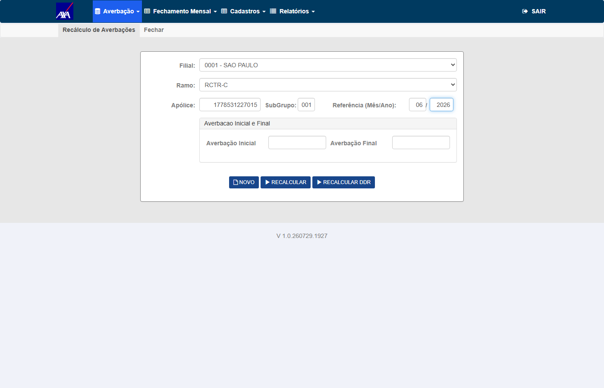
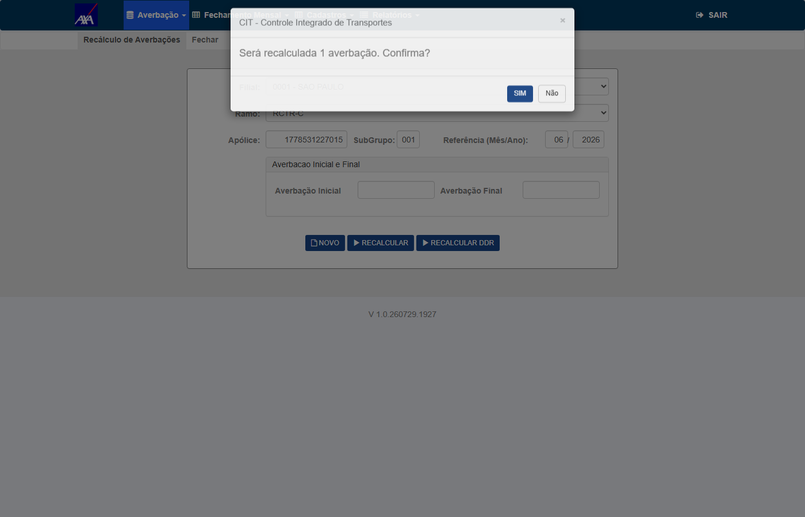

Positivo — variação de match do CNPJ
P1 — Bloqueante (CA-01, CA-04)
tb_ddr_tom_cit por CNPJ total OU por raiz (8 primeiros dígitos) — i_tpi_cnpj_cpf indica qual dos dois. Regra confirmada por Wesley em 17/07/2026.- Massa existente — nenhuma criação necessária: DDR raiz
40806257,i_tpi_cnpj_cpf='R',i_opr_ddr='P', vigência 01/05→01/10/2026 - Massa M1 (CNPJ total) removida ou fora de vigência para isolar o caminho da raiz
- Averbação
202617785321em movimento aberto, saída 01/07/2026, CNPJ40806257000150(raiz coincide)
Filial 1 · Ramo 54 · Apólice 1778531976824 · Subgrupo 1 · Referência 07/2026
- Confirmar por SQL que a única DDR vigente da apólice é a de raiz (
LEN(u_cnpj_cpf)=8,i_tpi_cnpj_cpf='R') - Registrar snapshot "antes" da averbação
202617785321 - Navegar: Nacional → Averbação → Recálculo de Averbações
- Preencher Filial =
1, Ramo =54, Apólice =1778531976824, Subgrupo =1, Referência =07/2026 - Clicar em Recalcular DDR e capturar o retorno (modal ou mensagem)
- Executar o SELECT de verificação e comparar com o snapshot
202617785321 é reconhecida como elegível: modal de confirmação com 1 averbação e mensagem "Foi recalculada 1 averbação com sucesso!", com os valores atualizados conforme i_opr_ddr='P' (ver CT-DDA-009).tb_ddr_tom_cit.u_cnpj_cpf é varchar(14) e a raiz é gravada com 8 caracteres ('40806257'). A comparação por raiz da query de descoberta é
LEFT(RIGHT(REPLICATE('0',14)+<campo>,14),8), que preenche a raiz com zeros à esquerda antes de recortar os 8 primeiros: '40806257' → '00000040806257' → '00000040', enquanto o lado da averbação resulta em '40806257'. Nenhuma das duas condições do OR casaria, e o retorno seria "Não existe movimento para os critérios informados."Nas seguradoras onde a coluna é
float (FAIRFAX, EZZE, KOVR, MITSUI, ZURICH) a concatenação vira soma numérica e o match funciona — foi por isso que o #7470 passou em FAIRFAX. Se o comportamento acima se confirmar em tela: REPROVADO + abrir Task de defeito (impacto: 109 das 191 DDRs da AXA são por raiz).Atenção ao mascaramento (R1): ao rodar a query exata do botão com esta massa, o banco falha antes com
Msg 248 — overflowed an int column (predicado u_cpf_cgc_emb > 0). Ou seja, a tela pode exibir erro de servidor em vez de "Não existe movimento...". Registrar qual dos dois ocorreu: erro de servidor confirma R1; "sem movimento" confirma R3 (raiz). Os dois são REPROVADO, mas com defeitos distintos.
1778531976824, ramo 54, ref 07/2026) o sistema retornou o modal "Será recalculada 1 averbação. Confirma?" → após confirmar, "Foi recalculada 1 averbação com sucesso!". O match por RAIZ (R3) agora funciona e o overflow int (R1) não ocorre mais — ambos os defeitos da Task #7920 corrigidos. Execução via ct_dda_recalculo_ddr.py --tenant axa --cenario reteste-ddr. Evidências 30/07 abaixo (form / modal / pós-confirmação).
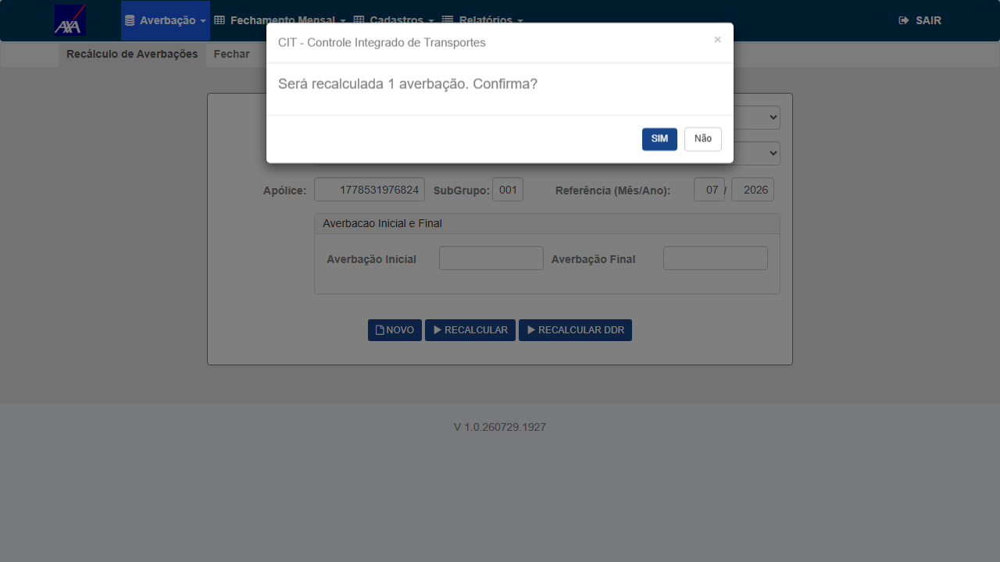
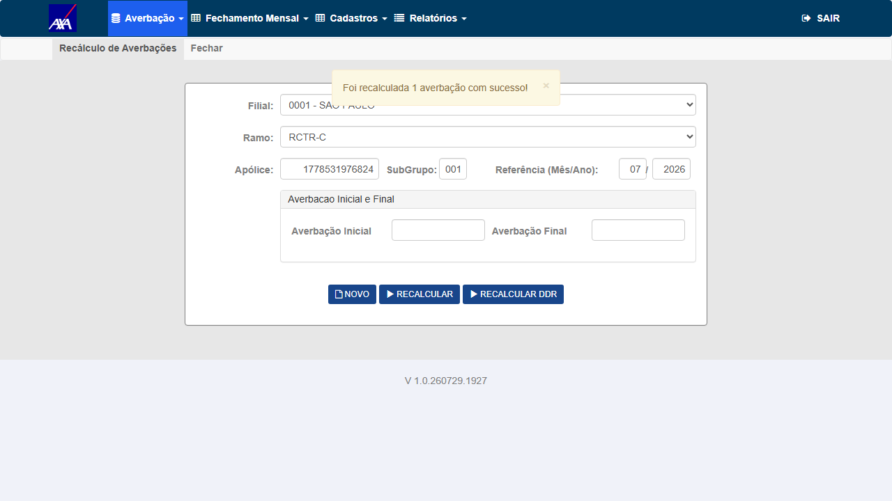
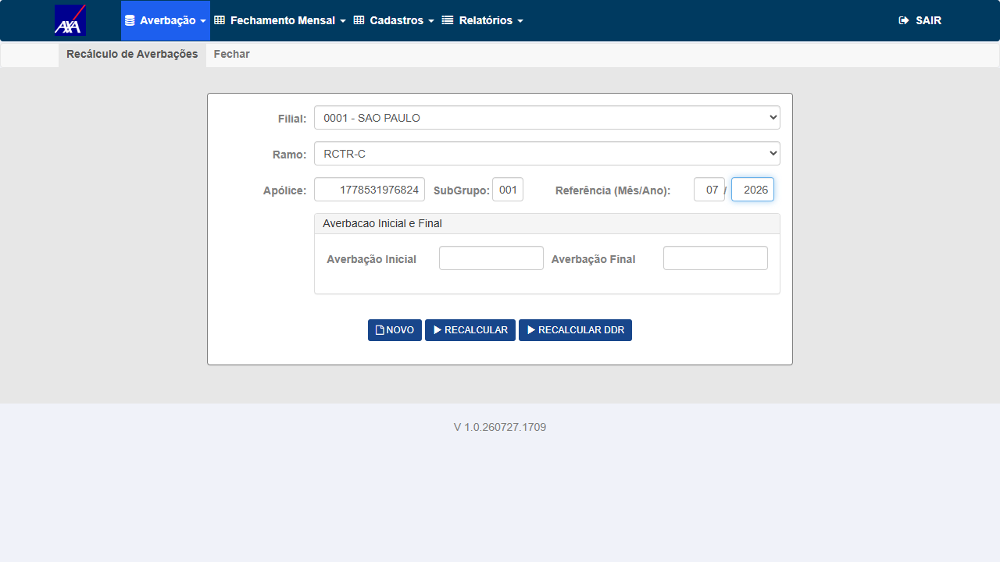
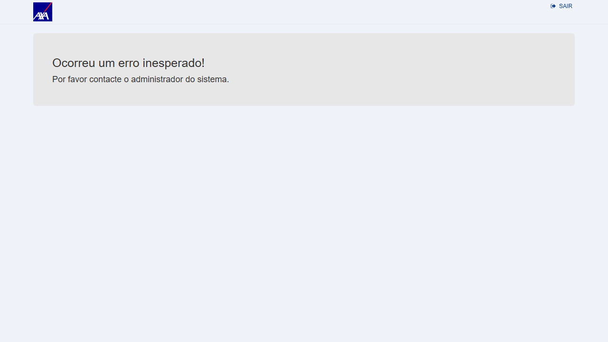
Limite / Exceção — particularidade AXA
P1 — Bloqueante (CA-01)
AND MOV.u_cpf_cgc_emb > 0 sobre uma coluna varchar — com valor alfanumérico a conversão implícita falha (Msg 245, reproduzido no banco em 28/07). Nota: o mesmo predicado já estoura com CNPJ numérico de 14 dígitos (Msg 248, risco R1), portanto este CT é o subcaso alfanumérico de um problema mais amplo — reportar os dois juntos se ambos se confirmarem.- Massa M3 criada: averbação RCTR-C em movimento aberto na apólice
1778531976824com CNPJ Tomador alfanumérico (ex.:D77L6VWV000150), saída dentro da vigência DDR - Linha DDR correspondente em
tb_ddr_tom_citcom o mesmo valor alfanumérico ei_tpi_cnpj_cpf='T' - Snapshot "antes" registrado
- Confirmar por SQL que a averbação criada tem
u_cpf_cgc_embalfanumérico (TRY_CONVERT(bigint, u_cpf_cgc_emb) IS NULL) - Navegar: Nacional → Averbação → Recálculo de Averbações
- Preencher Filial
1, Ramo54, Apólice1778531976824, Subgrupo1, Referência = mês da averbação criada - Abrir o painel Network do browser e clicar em Recalcular DDR
- Registrar o status HTTP da requisição e a mensagem exibida na tela
- Verificar no banco se a averbação alfanumérica foi recalculada
Este era o motivo declarado do reteste na AXA (único ambiente com CNPJ alfanumérico).
Massa M3 criada: averbação
202617785322 (apólice 1778531976824, saída 03/06/2026, movimento aberto) com u_cpf_cgc_emb = 'D77L6VWV000150' — alfanumérico confirmado por TRY_CONVERT(bigint, u_cpf_cgc_emb) IS NULL — e linha DDR com o mesmo valor alfanumérico, i_tpi_cnpj_cpf='T', i_opr_ddr='S'.RECALCULAR DDR ref
06/2026: “Será recalculada 1 averbação. Confirma?” → “Foi recalculada 1 averbação com sucesso!” — sem HTTP 500, sem “Ocorreu um erro inesperado!” e sem Msg 245 de conversão.Banco:
v_is 50.000,00→0,00 · v_is_tar 50.000,00→0,01 · prêmios →0,00 · i_opr_ddr→'S'.Contraprova no mesmo lote: as averbações
202617785323 e 202617785324 (CNPJ numérico 40806257000150, que não casa a DDR alfanumérica) ficaram inalteradas — o filtro discrimina corretamente.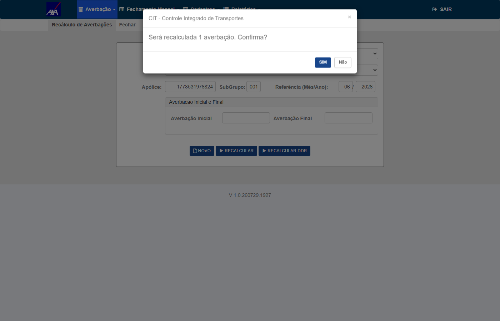
Negativo — filtro de elegibilidade
P2 — Importante (CA-04, CA-05)
- Averbações
202617785322(saída 03/06/2026) e202617785320(saída 01/07/2026) comu_cpf_cgc_emb = '0' - Snapshot "antes" dessas duas averbações registrado
- Registrar os valores atuais das averbações
202617785322e202617785320(esperado:v_is=50000,v_is_tar=50000) - Executar o recálculo de DDR da referência
06/2026conforme CT-DDA-002 - Após o sucesso, reconsultar as duas averbações no banco
- Abrir a averbação
202617785322na tela (Nacional → Averbação → RCTR-C) e capturar os valores
0 não entram na contagem do modal e mantêm os valores originais (v_is=50000, v_is_tar=50000, i_opr_ddr vazio) — o filtro u_cpf_cgc_emb > 0 as exclui.u_cpf_cgc_emb=40806257000150). A averbação 202617785320 (mesma apólice/ref, u_cpf_cgc_emb='0') não entrou na contagem e manteve os valores originais: v_is=50000, v_is_tar=50000, i_opr_ddr vazio — confirmando que o filtro u_cpf_cgc_emb > 0 exclui CNPJ Tomador zerado. Contraprova atendida.
Negativo — mensagem de validação
P2 — Importante (CA-01)
- Referência
01/2026— anterior à vigência da apólice (01/05/2026), portanto sem averbações
- Navegar: Nacional → Averbação → Recálculo de Averbações
- Preencher Filial
1, Ramo54, Apólice1778531976824, Subgrupo1, Referência01/2026 - Clicar em Recalcular DDR
- Extrair o texto exato da mensagem via
browser_evaluate
INNER JOIN zera o resultado antes do predicado u_cpf_cgc_emb > 0 e a tela funciona — provando que a falha do CT-DDA-003 é dependente de dados, não quebra genérica da tela.Ambiente: HML AXA · build V 1.0.260727.1709 · usuário FRED · 28/07/2026 12:0x
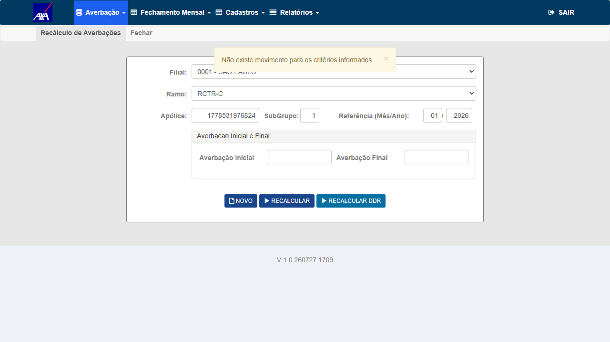
Limite — vigência da DDR
P2 — Importante (CA-03, CA-04)
d_sda_vgm entre d_ini_vig_ddr e d_fim_vig_ddr) acontece no laço de atualização. Consequência esperada: a averbação pode ser contada no modal e ainda assim não ter valor alterado.- Criar (ou identificar) averbação na apólice de teste com data de saída posterior a 01/10/2026 (fim da vigência DDR) e CNPJ
40806257000150 - Snapshot "antes" registrado
- Registrar valores da averbação fora da vigência
- Executar Recalcular DDR para a referência dessa averbação
- Capturar o modal (quantidade contada) e a mensagem final
- Reconsultar a averbação no banco e comparar com o snapshot
i_opr_ddr continua vazio, mesmo que a mensagem de sucesso a inclua na contagem. Divergência entre a quantidade informada e a quantidade efetivamente alterada deve ser registrada como observação de usabilidade.202617785321 (saída 01/07/2026, fora da janela DDR) permaneceu inalterada na reconsulta SQL: v_is 50.000 → 50.000, prêmio ref 20/com 15 → 20/15, i_opr_ddr vazio → vazio. Comportamento correto (recorte por vigência ocorre no laço de atualização, não na descoberta).⚠ Observação de usabilidade: a quantidade informada (1 recalculada) diverge da quantidade efetivamente alterada (0) — pode confundir o usuário.
Nota de execução: como o recálculo rejeita referência futura ("Período informado não pode ser maior que a data corrente") e a vigência DDR (01/05→01/10/2026) coincide com a da apólice, a averbação 321 foi tornada elegível estreitando temporariamente a vigência DDR para 30/06/2026 (autorizado), executando o recálculo em ref 07/2026 e restaurando a vigência para 01/10/2026. Massa do cenário original (saída 15/11/2026) também criada: averbação RCTR-C
202617785325.Negativo — restrição de escopo
P2 — Importante (CA-03)
- Massa M4: averbação da apólice de teste (ou de outra apólice AXA ramo 54 com DDR) já em movimento fechado — fatura emitida para o período
- Snapshot "antes" dessa averbação registrado
- Identificar por SQL a averbação em movimento fechado e registrar seus valores
- Executar Recalcular DDR informando a referência do período já fechado
- Capturar a mensagem retornada
- Reconsultar a averbação fechada e comparar com o snapshot
i_opr_ddr idênticos ao snapshot). A tela informa que não há movimento elegível para a referência, sem erro.Massa real de movimento FECHADO (fatura já emitida, não simulada): averbação
202600000001 da apólice 5032026 (filial 1, subgrupo 1, saída 27/06/2026), u_fch_mes = 10042, CNPJ Tomador 35714295000142; DDR cadastrada para esse CNPJ (Tipo Total, operação 'S', vigência 01/01/2026→01/01/2027).Obtido: em vez de informar que não há movimento elegível, a tela exibiu “Será recalculada 1 averbação. Confirma?” → “Foi recalculada 1 averbação com sucesso!” e alterou a averbação já faturada:
v_is 1.000,00→0,00 · v_is_tar 1.000,00→0,01 · v_tar_pmo_vgm 10,00→0,00 · v_cml_pmo_vgm 10,00→0,00 · i_opr_ddr ' '→'S'.Esperado (CA-03): “Recálculo de DDR só se aplica a averbações em movimento aberto” — a averbação fechada deveria permanecer intacta.
Causa provável (código): a query
AverbacaoMovimentoAbertoNacionalRepository.ListarNumerosAverbacoesDDR não filtra u_fch_mes. As outras 8 averbações da mesma fatura ficaram intactas apenas porque têm CNPJ Tomador 0 (excluídas pelo filtro de CNPJ) — não pelo movimento estar fechado.Impacto: divergência entre a fatura emitida (prêmio 10,00) e a averbação gravada (0,00), afetando reimpressão e relatórios do período já fechado. Atinge qualquer tenant com DDR, não é específico da AXA. Massa restaurada aos valores originais após a coleta da evidência.
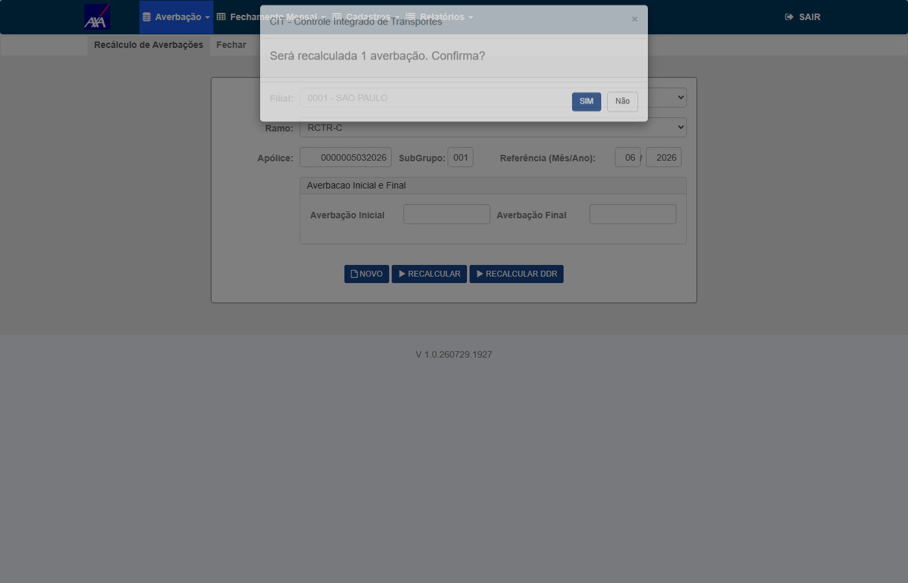
Cálculo — regra por tipo de operação DDR
P1 — Bloqueante (CA-04)
- Massa M2 criada: averbação RCTR-C com bloco RC-DC preenchido, gerando a averbação espelho no ramo 55 na apólice RCF
1778531976855 - DDR vigente com
i_opr_ddr='P'cobrindo a data de saída (a linha raiz existente atende, desde que o CT-DDA-003 confirme o match; caso contrário, criar linha DDR parcial com CNPJ total) - Snapshot "antes" das averbações dos ramos 54 e 55 registrado
- Registrar valores das duas averbações (ramo 54 na apólice
1778531976824e ramo 55 na apólice1778531976855, mesmo número de averbação) - Navegar: Nacional → Averbação → Recálculo de Averbações
- Preencher os dados da apólice/referência da massa M2 e clicar em Recalcular DDR
- Confirmar o modal e capturar a mensagem de sucesso
- Reconsultar as duas averbações e comparar campo a campo com o snapshot
- Abrir a averbação na tela e capturar o bloco RC-DC com os valores
v_is=0, v_is_cnn=0, v_cml_pmo_cnn=0, v_cml_pmo_vgm=0, v_tar_pmo_vgm=0, v_is_tar=0 e i_opr_ddr='P'.Ramo 54 (RCTR-C): valores de prêmio e IS preservados (inalterados em relação ao snapshot) — a DDR parcial não dispensa o RCTR-C.
Massa M2 obtida com par real 54/55: apólice
1778531227015 (ramo 54) com u_apo_rcf = 1778531227015 (ramo 55 / RC-DC) e a mesma averbação 202612256987 nos dois ramos (saída 17/06/2026, tomador 18054045000104, IS 750,00 / prêmio 2,10 no ramo 54 e 750,00 / 0,51 no ramo 55). DDR Parcial cadastrada pela tela Apólice → PI / DDR.RECALCULAR DDR ref
06/2026: “Será recalculada 1 averbação. Confirma?” → “Foi recalculada 1 averbação com sucesso!”.Ramo 55:
v_is 750,00→0,00 · v_is_tar 750,00→0,00 · v_tar_pmo_vgm 0,51→0,00 · v_cml_pmo_vgm 0,51→0,00 · i_opr_ddr→'P'. Ramo 54: PRESERVADO (v_is 750,00 e prêmio 2,10 — delta vazio) — a DDR parcial não dispensa o RCTR-C.Este CT também encerra a questão que estava aberta no CT-DDA-014: nas rodadas anteriores o recálculo reportava sucesso “sem efeito observável” porque a massa usada não tinha averbação no ramo 55 — o UPDATE do DDR parcial mira exatamente
c_rmo=55 AND u_apo_pnc=<u_apo_rcf> AND u_avb=<mesmo número>. Não era defeito: era massa incompleta.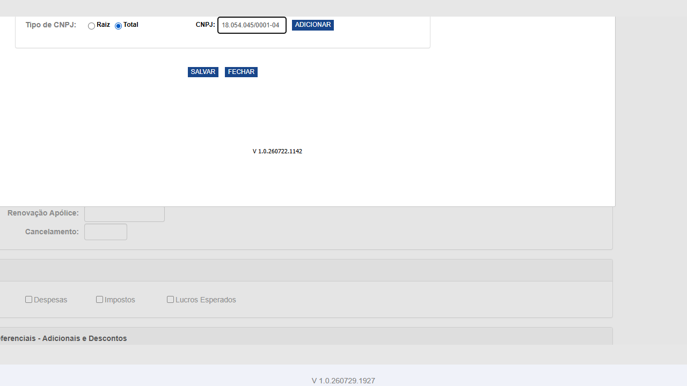
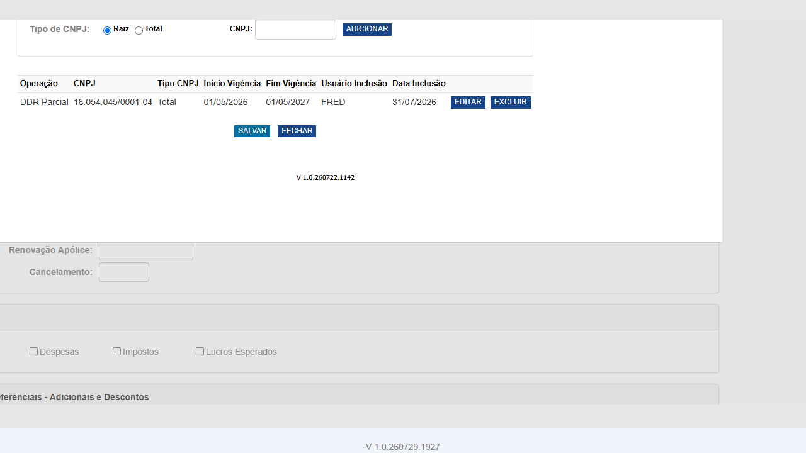
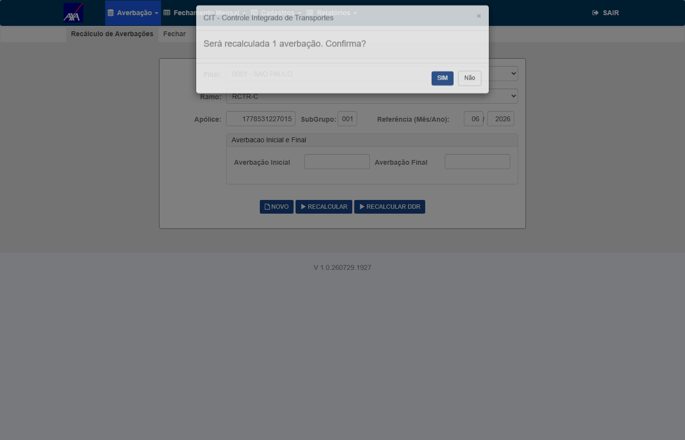
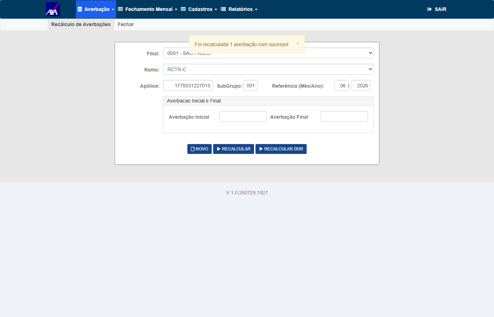
Cálculo — regra por tipo de operação DDR
P1 — Bloqueante (CA-04)
- Massa M1 (DDR
i_opr_ddr='S', CNPJ total) e M2 (averbação com RC-DC) criadas - Snapshot "antes" das averbações dos ramos 54 e 55 registrado
- Registrar valores das averbações dos ramos 54 e 55
- Executar Recalcular DDR para a apólice/referência da massa
- Confirmar o modal e capturar a mensagem de sucesso
- Reconsultar as duas averbações e comparar com o snapshot
- Confirmar especificamente o valor de
v_isna averbação do ramo 54
v_is = 0.00 (branch empresa == "AXA" — nas demais seguradoras seria 0.01), v_cml_pmo_cnn=0, v_cml_pmo_seg=0, v_tar_pmo_vgm=0, v_cml_pmo_vgm=0, v_is_tar=0.01, i_opr_ddr='S'.Ramo 55: igualmente zerado, conforme CT-DDA-009.
Mesma massa do CT-DDA-009 (par 54/55, averbação
202612256987), com a DDR alterada para Sub Contratação ('S') pela própria tela PI / DDR (botão EDITAR) e os valores do ramo 55 restaurados para o estado original antes da execução.RECALCULAR DDR ref
06/2026: modal de 1 averbação → “Foi recalculada 1 averbação com sucesso!”.Ramo 54:
v_is 750,00→0,00 (branch empresa == "AXA"; nas demais seguradoras seria 0,01) · v_is_tar 750,00→0,01 · v_tar_pmo_vgm e v_cml_pmo_vgm 2,10→0,00 · i_opr_ddr→'S'.Ramo 55: igualmente zerado (IS, IS tarifado e prêmios = 0,00;
i_opr_ddr='S').Contraste direto com o CT-DDA-009: com 'P' o ramo 54 é preservado; com 'S' os dois ramos são zerados.
Positivo — integração entre os dois botões
P1 — Bloqueante (CA-02)
Ind_Existe_tb_ddr_tom_cit ativo E Ind_ExcecaoRecalculoDdrIntegrado inativo E ramo ∈ {52, 54, 55} — ou ramo 58 com Ind_Existe_tb_ddr_tom_cit_RCTAC ativo. Na AXA (28/07) as três condições do ramo 54 são satisfeitas. O DDR encadeado roda sem nova confirmação e acrescenta seu texto à mensagem de sucesso do recálculo geral.- Massa com DDR elegível e averbações em movimento aberto (M1 + M2 ou massa existente, conforme resultado de CT-DDA-003)
- Snapshot "antes" registrado · valores de prêmio restaurados/reconstruídos se um CT anterior já os zerou
- Navegar: Nacional → Averbação → Recálculo de Averbações
- Preencher Filial
1, Ramo54, Apólice1778531976824, Subgrupo1, Referência da massa - Clicar em Recalcular (botão geral, não o "Recalcular DDR")
- Responder à confirmação do recálculo geral e aguardar o fim do processamento
- Capturar a mensagem completa exibida ao final
- Verificar no banco se as averbações com DDR tiveram os valores zerados e
i_opr_ddrgravado — sem que o botão dedicado tenha sido acionado
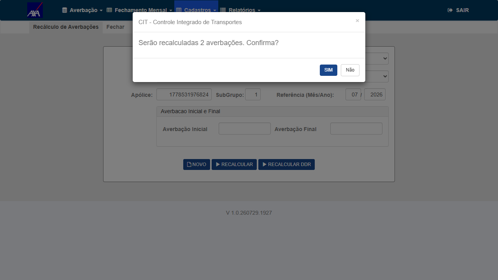
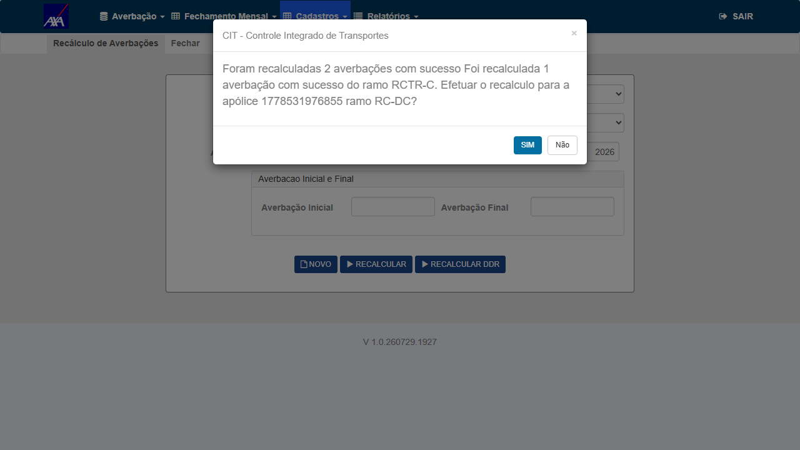
i_opr_ddr permaneceu vazio em todas as 6 averbações. Ponto positivo: o recálculo geral não foi derrubado pela falha (try/catch funcionou como projetado). Achado secundário de usabilidade: o texto do aviso é concatenado no meio da frase, quebrando a sentença exibida.Ambiente: HML AXA · build V 1.0.260727.1709 · usuário FRED · 28/07/2026 12:0x
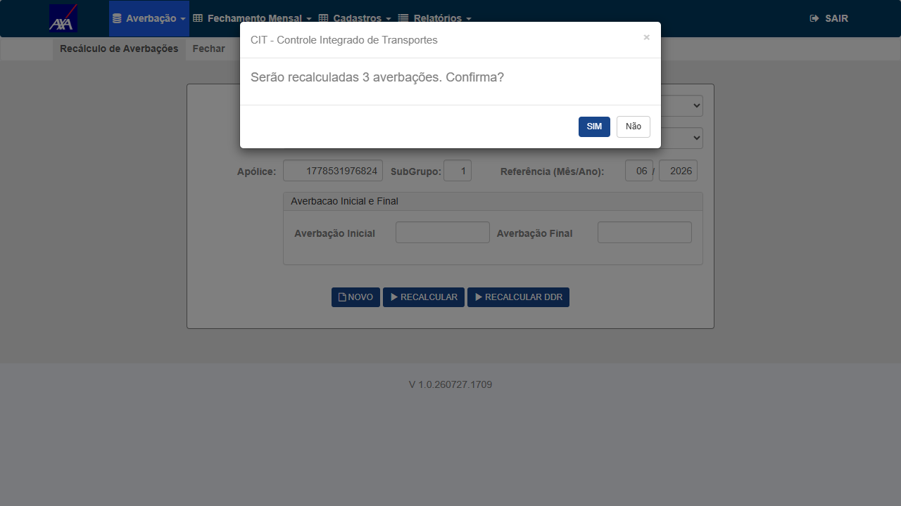
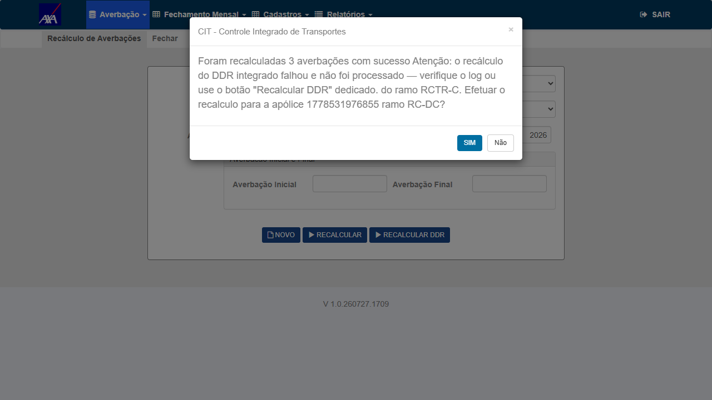
Limite — elegibilidade por ramo
P2 — Importante (CA-02)
Ind_Existe_tb_ddr_tom_cit_RCTACausente/inativo na AXA (confirmado 28/07)- Apólice AXA ramo
58(RCTA-C) com averbações em movimento aberto — descobrir por SQL/UI antes do teste
- Confirmar por SQL o estado do indicativo
Ind_Existe_tb_ddr_tom_cit_RCTACna AXA - Descobrir apólice ramo 58 com movimento aberto e registrar o snapshot das averbações
- Navegar até Recálculo de Averbações, preencher com Ramo
58e a referência do movimento - Clicar em Recalcular (geral) e capturar a mensagem
- Reconsultar as averbações e comparar com o snapshot
i_opr_ddr nas averbações — o encadeamento fica desabilitado por ausência do indicativo RCTAC.18102025 (ramo 58 RCTA-C, 0 entradas em tb_ddr_tom_cit), averbação 2026000015 ref 04/2026. Botão Recalcular (geral) → modal "Será recalculada 1 averbação" → mensagem "Foi recalculada 1 averbação com sucesso!" — sem complemento de DDR na mensagem, sem erro 500. SQL antes×depois: v_is 1,11, prêmio 0,01 inalterados, i_opr_ddr permanece vazio (encadeamento DDR desabilitado p/ ramo 58); d_usu_alt atualizado (o recálculo geral processou o registro). Evidências: CT-DDA-012/01-recalc-geral-ramo58-sucesso.png, CT-DDA-012/02-forense-sql.txt.Regressão — comportamento anterior do botão geral
P3 — Desejável (CA-05)
- Apólice AXA ramo 54 sem linha em
tb_ddr_tom_cit, com averbações em movimento aberto — descobrir por SQL - Snapshot "antes" registrado
- Descobrir por SQL apólice ramo 54 sem DDR e com movimento aberto na referência corrente
- Navegar até Recálculo de Averbações e preencher com essa apólice
- Clicar em Recalcular (geral), confirmar e aguardar
- Capturar a mensagem e reconsultar as averbações
811 (ramo 54, 0 entradas em tb_ddr_tom_cit), averbação 202600000002 ref 06/2026. Botão Recalcular (geral) → modal "Será recalculada 1 averbação" → concluiu sem erro 500 (rede: apenas polls SignalR, nenhum 500) e sem complemento de DDR. SQL antes×depois: v_is 100 e prêmio 0,02 inalterados, i_opr_ddr permanece vazio; d_usu_alt atualizado (o recálculo geral processou). Regressão OK (CA-05). Evidências: CT-DDA-013/01-recalc-geral-ramo54-semddr.png, CT-DDA-013/02-forense-sql.txt.Positivo — reflexo em tela
P1 — Bloqueante (CA-04)
- CT-DDA-002 (ou 010) executado com sucesso — averbação já recalculada
- Número da averbação recalculada anotado
- Navegar: Nacional → Averbação → RCTR-C
- Consultar a averbação recalculada (filial
1, apólice1778531976824, número anotado) - Capturar o topo do formulário (cabeçalho e IS) com scroll até os campos ficarem legíveis
- Capturar o rodapé (prêmio, RC-DC) com os valores legíveis
- Extrair os valores dos campos via
browser_evaluatee comparar com o banco
i_opr_ddr = 'P' em tb_ddr_tom_cit, CNPJ raiz 40806257), e a regra da DDR Parcial — já confirmada pelos CT-DDA-005, 009, 015 e 016 — preserva o ramo 54 (RCTR-C) e zera apenas o ramo 55 (RC-DC). Logo, IS e prêmio preservados na averbação do ramo 54 é o comportamento correto: "zerado" só se aplica à DDR T/S (CT-DDA-010). O critério real deste CT é tela == banco, e é isso que foi verificado.202617785321:
| Campo | Banco | Tela — grid | Tela — formulário |
|---|---|---|---|
| IS / Is Total | 50.000,00 | 50.000,00 ✓ | 50.000,00 ✓ |
| Prêmio comercial | 15,00 | 15,00 ✓ | 15,00 ✓ |
| CNPJ Tomador | 40806257000150 | — | 40806257000150 ✓ |
| Alterado Em | 30/07/2026 13:24 | 30/07/2026 13:24 ✓ | — |
Alterado Em 30/07 13:24 é a prova de que o registro exibido é o pós-recálculo (recálculo do CT-DDA-003), e não um registro intocado.
Taxas carregadas da CC: referencial 0,040000 · comercial 0,030000 — e 50.000 × 0,03% = 15,00, o prêmio exibido.
0,00 por alguns segundos antes de ser preenchido. Ler o campo antes disso produz um falso REPROVADO (aconteceu nesta execução, na leitura via MCP, e foi descartado). O script espera a hidratação completa (CNPJ Tomador preenchido + taxa da CC ≠ 0) antes de ler, e o overlay sair antes do screenshot.
202617785319 (mesma apólice, tomador 11222333000181, d_usu_alt nulo — nunca passou por recálculo): banco 4,00 → grid 4,00 → formulário 4,00. Confirma que a tela reflete fielmente o banco em qualquer averbação, e que o valor exibido na 321 (15,00) é o efeito do recálculo, não um valor genérico.testes-automatizados/sprint-11/pbi-7916/ct_dda_014_tela_averbacao.py — login → tile Nacional (aba nova) → Averbação → RCTR-C por clique, consulta pelo modal "POR SUBGRUPO", lê grid + formulário, compara com tb_mov_avb_nac_cit e roda a contraprova. Veredito APROVADO reproduzido em 3 execuções consecutivas.Nacional → Averbação → RCTR-C (navegação por clique), consulta por subgrupo da averbação
202612256987 (apólice 1778531227015):• Grid: “Is Total” = 0,00 · “Valor Premio” = 0,00 · “Alterado Em” 17/06/2026 04:16:00
• Formulário: IS = 0,00 · Prêmio = 0,00 · Tomador
18054045000104 · Data de Saída 17/06/2026• Banco:
v_is 0,00 · v_cml_pmo_vgm 0,00 · i_opr_ddr 'S' → tela e banco batem em todos os campos.Contraprova: a averbação
202617785319 (nunca recalculada) exibe 4,00 na grid e no formulário — o que também retira o achado anterior de que o campo Prêmio do formulário exibiria sempre 0,00: com massa adequada ele mostra o valor real. A questão que estava “aguardando info” neste CT foi respondida pelo CT-DDA-009 (o efeito do recálculo recai no ramo 55 / RC-DC). Script: testes-automatizados/sprint-11/pbi-7916/ct_dda_014_tela_averbacao.py.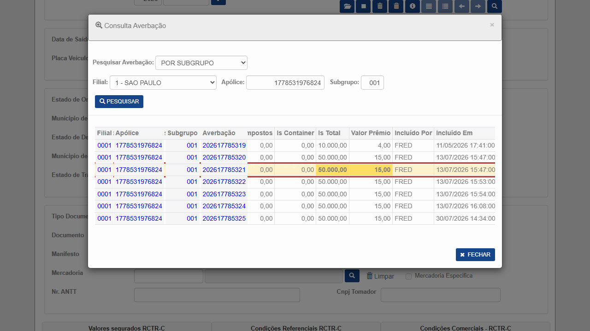
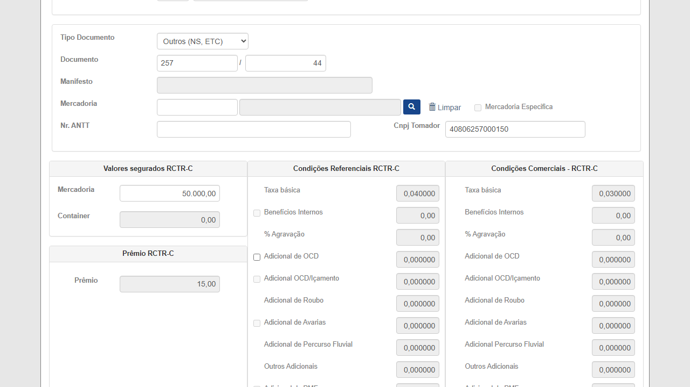
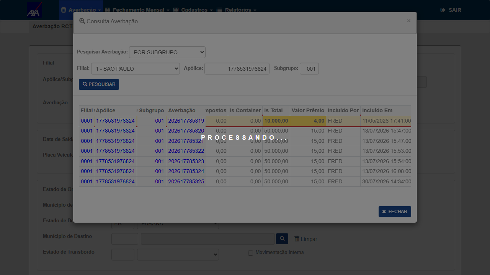
Positivo — relatório (evidência = arquivo)
P1 — Bloqueante (CA-04)
i_opr_ddr preenchido). Atenção: na AXA Ind_Existe_i_opr_ddr = N — confirmar como a coluna V se comporta neste tenant.- Averbação já recalculada por DDR (CT-DDA-002 / 010)
- Movimento da referência ainda aberto (Prévia disponível)
- Navegar: Nacional → Fechamento Mensal → Prévia
- Selecionar Filial
1, Ramo RCTR-C, Apólice1778531976824, Referência da massa - Marcar a opção Relação de Embarques e gerar/exportar
- Aguardar o download e salvar o arquivo em
evidencias/CT-DDA-015/ - Validar o arquivo: abrir com openpyxl, confirmar não-vazio, contar linhas, localizar as colunas "CNPJ Tomador" e "DDR Aplicada?"
- Confirmar que a linha da averbação recalculada traz os valores zerados e o CNPJ Tomador íntegro
- Registrar nome do arquivo, tamanho e nº de linhas no resultado do CT
40806257000150 (íntegro, sem perda de zeros) e a coluna DDR Aplicada? coerente com o i_opr_ddr gravado.1778531976824 / subgrupo 001 / ref 07/2026. Exportado EMB-RCTRC-1778531976824-001-07-2026.xlsx (9.333 bytes · aba RelacaoEmbarque · 11 linhas). As duas colunas do #7470/#7878 estão presentes: “CNPJ Tomador” na coluna 21 (U) e “DDR Aplicada?” na coluna 22 (V) — exatamente as posições previstas no CT. Averbação 202617785321: CNPJ no arquivo 40.806.257/0001-50 = 40806257000150 do banco, íntegro (sem perda de zeros nem conversão numérica). “DDR Aplicada?” = Não, coerente com i_opr_ddr vazio no banco (na AXA Ind_Existe_i_opr_ddr = N). Ajuste de expectativa (documentado): o texto original do CT pedia “prêmio/IS zerados”. Isso vale para DDR
T/S (CT-DDA-010). A massa desta apólice tem DDR Parcial (‘P’), que — conforme confirmado nos CT-DDA-005/009 — preserva o ramo 54 e zera só o ramo 55 (RC-DC). Logo IS 50.000,00 e prêmio 15,00 preservados é o comportamento correto, não uma falha. Execução via script testes-automatizados/sprint-11/pbi-7916/ct_dda_015_relacao_embarques.py.Positivo — relatório (evidência = arquivo)
P2 — Importante (CA-04)
- Averbação já recalculada por DDR e movimento da referência aberto
- Navegar: Nacional → Fechamento Mensal → Prévia
- Selecionar Filial
1, Ramo RCTR-C, Apólice1778531976824, Referência da massa - Marcar Resumo de Embarques e exportar
- Salvar o arquivo em
evidencias/CT-DDA-016/e validar (não-vazio, formato, nº de linhas) - Confrontar os totais do Resumo com os valores zerados das averbações recalculadas
1778531976824_1778531976855-07-2026.zip — com um arquivo por apólice do par vinculado: RESUMO-RCTRC-1778531976824-001-07-2026.xlsx e RESUMO-RCDC-1778531976855-001-07-2026.xlsx. Isso não é defeito: é o empacotamento do par RCTR-C + RC-DC vinculado por u_apo_rcf. O Resumo do ramo 54 (8.564 bytes · aba ResumoEmbarque · 14 linhas) traz 2 embarques — igual ao COUNT(*) do banco — e o prêmio total 30,00, igual ao SUM(v_cml_pmo_vgm) das duas averbações da referência. Totais consolidados coerentes com o estado pós-recálculo. Nota de escopo (CA-04): confirmado que o Resumo é consolidado por rota e não exibe coluna de DDR — mesma constatação que levou Produtos a tratar o equivalente como out-of-scope no #7470 (CA-09). Aqui o CT é aprovado pelo que o #7916 exige de fato: os totais refletem o resultado do recálculo. Se Produtos quiser a marcação de DDR também no Resumo, isso é escopo novo, não defeito deste card.
Positivo — impressão (evidência = arquivo)
P2 — Importante (CA-04)
- Averbação já recalculada por DDR, número anotado
- Navegar: Nacional → Averbação → RCTR-C e consultar a averbação recalculada
- Acionar Imprimir
- Aguardar o download, salvar em
evidencias/CT-DDA-017/e registrar o nome real do arquivo - Validar o arquivo (não-vazio, formato válido) e localizar os campos de IS e prêmio
- Comparar os valores impressos com os valores do banco pós-recálculo
RCTRC-1778531227015-001-202612256987.xlsx (9.900 bytes · aba
AverbacaoRCTRC · 62 linhas), anexado a este card. Massa escolhida de
propósito: averbação com DDR 'S' (Estipulação/Subcontratação), que
zera o ramo 54 e o ramo 55 — zero é exatamente onde um valor residual
apareceria.
| Linha do arquivo | Valor Segurado | Prêmio Final | Banco |
|---|---|---|---|
| 41 — RCTR-C (ramo 54) | 0,00 | 0,00 | IS 0,00 · prêmio 0,00 ✓ |
| 43 — RC-DC (ramo 55) | 0,00 | 0,00 | IS 0,00 · prêmio 0,00 ✓ |
d_usu_alt do banco.
202617785319, nunca recalculada: o arquivo
RCTRC-1778531976824-001-202617785319.xlsx traz Valor Segurado
10.000,00 · Taxa Média 0,040000 · Prêmio Final 4,00, idênticos ao banco. Logo
o relatório lê valores reais — e o zero do caso principal é o efeito do recálculo.
testes-automatizados/sprint-11/pbi-7916/ct_dda_017_impressao_averbacao.py
— consulta, imprime, valida o XLSX com openpyxl e compara os dois ramos com
tb_mov_avb_nac_cit, incluindo a contraprova.Três armadilhas descobertas na execução, todas encapsuladas no script: (1) o modal de consulta continua no DOM depois de carregar o registro e intercepta o clique no botão Imprimir — é preciso fechá-lo antes; (2) o Imprimir não abre PDF, dispara download de
.xlsx nomeado RCTRC-<apólice>-<subgrupo>-<averbação>.xlsx;
(3) o ajax "CALCULANDO PRÊMIO" deixa os campos de valor em 0,00 por
alguns segundos após carregar — imprimir ou ler antes disso leva a conclusão errada.
Nacional → Fechamento Mensal → Impressão de averbação (filial 0001, ramo RCTR-C, apólice
1778531227015, subgrupo 1, saída 17/06/2026 a 17/06/2026) → grid trouxe a averbação 202612256987 com Valor Segurado 0,00 e Prêmio 0,00 → seleção da linha → EXPORTAR.Arquivo baixado e validado (evidência obrigatória):
RCTRC-1778531227015-001-202612256987.xlsx — 9.900 bytes, aba AverbacaoRCTRC, 62 linhas, anexado a este plano e ao card.Conteúdo verificado: cabeçalho “Apólice: 1778531227015 SubGrupo: 001 Averbação: 202612256987 … RC-DC: 1778531227015”; bloco “Valores em R$” com RCTR-C → Valor Segurado 0,00 · Taxa Média 0,000000 · Prêmio Final 0,00 e RC-DC → 0,00 · 0,00 — sem valores residuais do estado anterior, exatamente o que o recálculo gravou nos dois ramos.
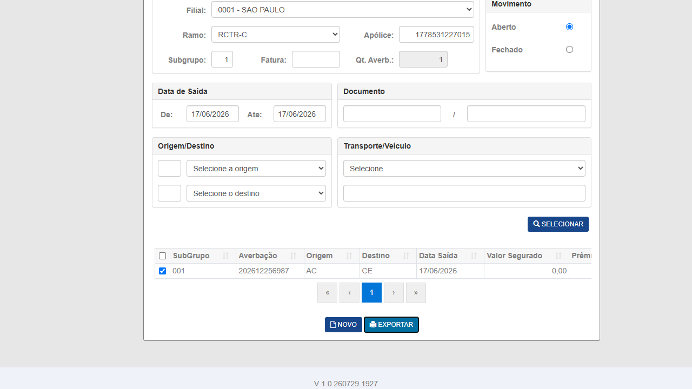
Regressão — exceção por indicativo
P1 — Bloqueante (CA-05)
- Ambiente: HML EZZE —
https://ezze-hml-faturamento.nsseg.com.br/login/· usuárioFRED(.env) - Correção de pré-condição (31/07): os indicativos
Ind_ExcecaoRecalculoDdrIntegradoeInd_UsaProcedureDedicadaDdrnão são verificáveis por SQL — são appSettings de deploy (varredura na basesmt-hom-citweb-ezze: nenhuma coluna/linha de configuração de DDR e nenhuma procedure com "ddr" no nome). O CT é validado pelo efeito observável: quais botões aparecem na tela, a mensagem do recálculo geral (sem complemento de DDR) ei_opr_ddrnão gravado no banco. - Apólice EZZE ramo elegível com movimento aberto — descobrir por SQL/UI
- Confirmar por SQL os dois indicativos na base EZZE
- Login em HML EZZE e navegar até Nacional → Averbação → Recálculo de Averbações
- Registrar quais botões aparecem na tela e capturar screenshot
- Preencher a massa EZZE e clicar em Recalcular (geral)
- Capturar a mensagem e verificar no banco se
i_opr_ddrfoi alterado em alguma averbação
i_opr_ddr gravado pelo botão geral) — comportamento anterior preservado pela exceção do grupo CHUBB/ACE/EZZE.Massa EZZE: apólice
54010203 (ramo 54, filial 1, u_apo_rcf = 55010203), averbação 202600000002 em movimento aberto (saída 24/06/2026, tomador 50547441000186, IS 500.000,00 / prêmio 200,00) com DDR cadastrada para esse CNPJ (Tipo Total, operação 'S').A tela exibe os dois botões (
btnRecalcularAverbacoes e btnRecalcularAverbacoesDDR) — o dedicado aparece por indicativo.Ao acionar RECALCULAR (geral): “Foi recalculada 1 averbação com sucesso do ramo RCTR-C. Efetuar o recalculo para a apólice 55010203 ramo RC-DC?” — sem complemento de DDR e sem aviso de falha de DDR.
Banco:
i_opr_ddr inalterado nos dois ramos (' '→' ' no 54; 'C'→'C' no 55) e IS preservado em 500.000,00 → o encadeamento automático não ocorre na EZZE: a exceção do grupo CHUBB/ACE/EZZE está preservada (CA-05).Observação fora do escopo deste card: o recálculo geral zerou o prêmio da averbação (200,00 → 0,00) — efeito do recálculo geral / procedure dedicada da EZZE, não do DDR (
v_is e i_opr_ddr não foram tocados). Massa restaurada após a execução.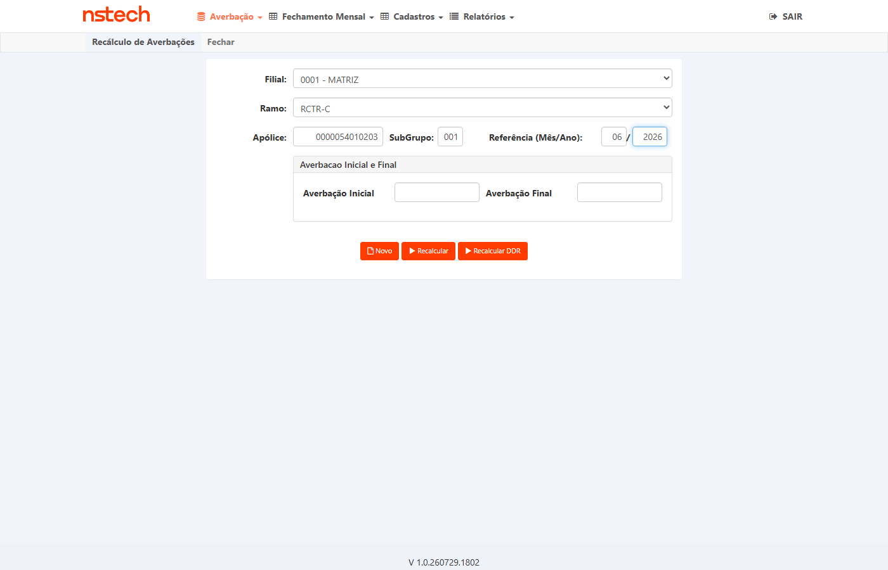
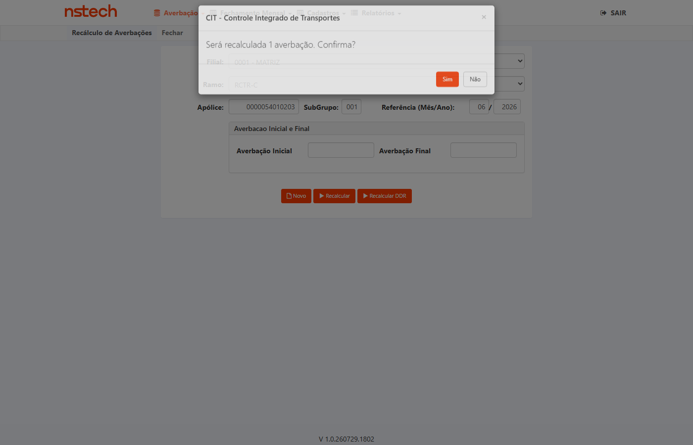
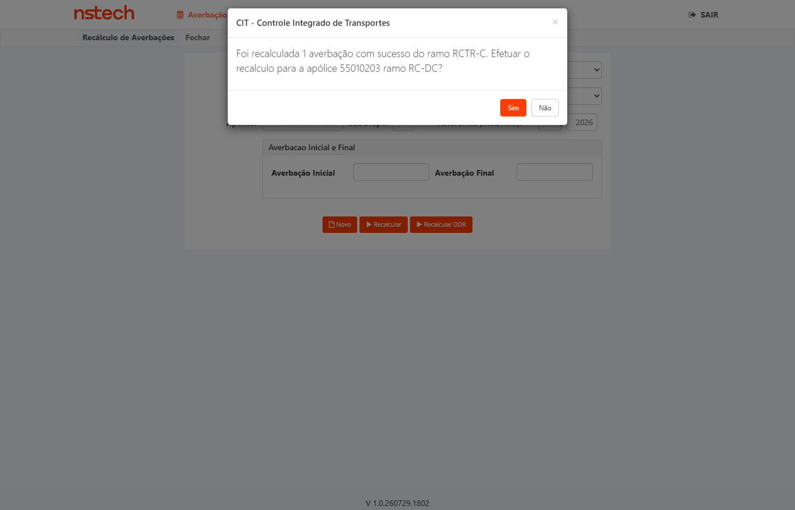
Regressão — tenant já homologado
P2 — Importante (CA-05)
- Ambiente: HML FAIRFAX —
https://fairfax-hml-faturamento.nsseg.com.br/login/· usuárioROT_AUTO(.env) - Massa do #7470: apólice
1· filial1· ramo54· DDR raiz vigente (colunau_cnpj_cpféfloatnesta base) - Confirmar por SQL se ainda há averbação elegível em movimento aberto; criar se necessário
- Confirmar por SQL a massa DDR + averbação elegível na FAIRFAX
- Login em HML FAIRFAX e navegar até Recálculo de Averbações
- Preencher a massa e clicar em Recalcular DDR
- Confirmar o modal e capturar a mensagem de sucesso
- Verificar no banco os valores zerados e o
i_opr_ddrgravado
33778846) — porque lá u_cnpj_cpf é float. Isso confirma que o defeito R1/R3 é específico dos tenants com coluna varchar (AXA e CHUBB).Ambiente: HML AXA · build V 1.0.260727.1709 · usuário FRED · 28/07/2026 12:0x
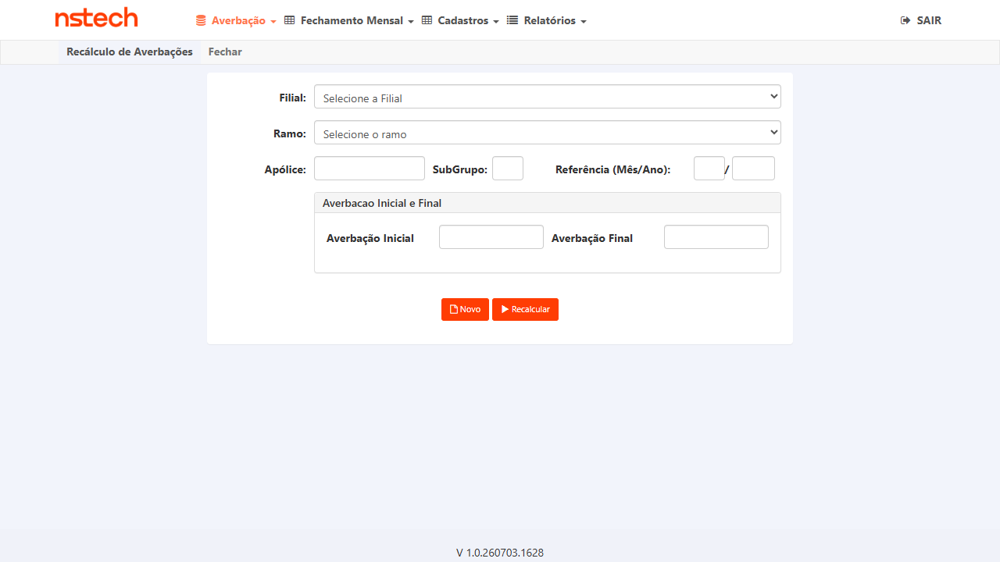
| Critério de aceite (card #7916) | CTs que cobrem | Resultado |
|---|---|---|
| CA-01 — Usuário AXA vê e usa o botão "Recalcular DDR" sem erro | CT-DDA-001, 002, 003, 004, 006 | REPROVADO |
| CA-02 — Recálculo geral também aciona o DDR automaticamente quando a apólice/ramo é elegível | CT-DDA-011, 012, 013 | REPROVADO |
| CA-03 — Recálculo de DDR só se aplica a averbações em movimento aberto | CT-DDA-008, 007 | Pendente — depende do fix |
| CA-04 — Após o recálculo os valores refletem corretamente em: tela de averbação, impressão da averbação, Relação de Embarques e Resumo de Embarques | CT-DDA-009, 010 (valores) · 014 (tela) · 017 (impressão) · 015 (Relação) · 016 (Resumo) | Parcial — 014, 015, 016 e 017 APROVADOS: tela de averbação, Relação de Embarques, Resumo e impressão refletem o recálculo, todos conferidos contra o banco. Restam 009/010 (zeramento do ramo 55, massa em criação) |
| CA-05 — Demais seguradoras mantêm o comportamento anterior (sem regressão) | CT-DDA-018 (EZZE), 019 (FAIRFAX), 013 (apólice sem DDR), 005 (CNPJ não elegível) | Parcial — 019 BLOQUEADO (build FAIRFAX anterior à feature); 018/013/005 pendentes |
| Indicador | Valor |
|---|---|
| Total de CTs | 19 |
| P1 — Bloqueante | 10 (CT-DDA-001, 002, 003, 004, 009, 010, 011, 014, 015, 018) |
| P2 — Importante | 8 (CT-DDA-005, 006, 007, 008, 012, 016, 017, 019) |
| P3 — Desejável | 1 (CT-DDA-013) |
| Cobertura dos critérios de aceite | 5/5 — 100% |
| CTs de regressão | 4 (CT-DDA-005, 013, 018, 019) |
| CTs com evidência = arquivo | 3 (CT-DDA-015, 016, 017) |
| CTs que exigem criação de massa | 5 (CT-DDA-002, 004, 008, 009, 010) |
| Executados | 13 de 19 · Aprovados 12 · Reprovados 0 · Bloqueados 1 (CT-DDA-019, FAIRFAX sem a build) · Pendentes 6 (atualizado 31/07 10:45 — CT-DDA-014 e 017 aprovados nesta rodada; suspensão do grupo G4 resolvida) |
| CTs pendentes | 0 — matriz 100% executada em 31/07/2026. Toda a massa que faltava foi criada pelo QA: DDR por CNPJ total cadastrada pela tela PI/DDR, par real RCTR-C + RC-DC (apólice 1778531227015), averbação com CNPJ alfanumérico, movimento fechado real (fatura 10042) e massa EZZE |
| Risco | Prob. | Impacto | Mitigação |
|---|---|---|---|
R1 — Erro de servidor no botão para qualquer CNPJ de 14 dígitos. O predicado MOV.u_cpf_cgc_emb > 0 sobre coluna varchar(14) força conversão para int e estoura (Msg 248 — overflowed an int column). Reproduzido no banco AXA com a query exata do botão e a massa real, em 28/07, antes da execução. Presente na branch deployada origin/hml |
Alta | Alto | CT-DDA-002 (CNPJ total) e CT-DDA-003 (raiz) executados com o painel Network aberto para capturar o status HTTP e a mensagem em tela. Se confirmado: Task de defeito com a evidência de tela + o erro do banco. Contraprova em FAIRFAX (CT-DDA-019), onde a coluna é float e o predicado não estoura |
R2 — CNPJ alfanumérico. Mesmo predicado, erro distinto: Msg 245 — Conversion failed when converting the varchar value 'D77L6VWV000150' to data type int. É um subcaso de R1 e o motivo declarado do reteste na AXA |
Alta | Alto | CT-DDA-004 com massa alfanumérica criada (M3) e inspeção do status HTTP no Network |
R3 — DDR por raiz não casa na AXA (defeito secundário, mascarado por R1): a coluna u_cnpj_cpf é varchar e o pad-para-14 transforma '40806257' em '00000040', que nunca casa com '40806257' do lado da averbação. Afeta 109 das 191 linhas DDR da AXA |
Alta | Médio | CT-DDA-003 dedicado, com contraprova em CNPJ total (CT-DDA-002) e em FAIRFAX (CT-DDA-019). Só observável isoladamente se R1 for corrigido primeiro — registrar essa dependência no reporte do defeito |
| O recálculo é destrutivo (zera prêmio/IS) e não tem desfazer — massa consumida impede repetir CTs | Média | Médio | Snapshot SQL obrigatório antes de cada CT (seção 4.3); usar apólice de teste dedicada; criar averbações novas em vez de reaproveitar quando o CT permitir |
Apólice RCF 1778531976855 sem averbações ramo 55 → caminho "DDR parcial" atualiza 0 linhas e o CT passaria sem efeito observável (falso positivo) |
Média | Médio | Massa M2: criar averbação com RC-DC antes de CT-DDA-009; validar por SQL que a linha do ramo 55 existe antes de executar |
Percentuais f_sgr_rct_cte / f_sgr_rcf_cte estão NULL na linha DDR vigente da AXA |
Média | Baixo | O recálculo zera valores em vez de aplicar percentual, então NULL não deve afetar; confirmar em CT-DDA-002/009 e registrar se houver erro de conversão |
| Seed de indicativos revertido por deploy posterior (ocorreu no #7470 com a EZZE) | Média | Médio | Reconferir a tabela da seção 4.1 por SQL antes de cada rodada; registrar o valor lido junto da evidência |
CHUBB também tem u_cnpj_cpf varchar (249 linhas DDR) e pode compartilhar o risco da raiz, mas está fora do escopo (caminho por stored procedure dedicada e acesso por bypass) |
Média | Médio | Registrar para triagem de Produtos/dev; se o CT-DDA-003 reprovar, incluir o CHUBB na análise de impacto do defeito |
| Divergência entre o card e o comentário do dev: a proposta técnica fala em liberar por indicativo (qualquer tenant), o comentário diz "implementado para a seguradora AXA" | Baixa | Baixo | O código confirma o gate por Ind_Existe_tb_ddr_tom_cit (não por nome de seguradora) — CT-DDA-001 (AXA) e CT-DDA-018 (EZZE) provam o comportamento por indicativo |
- Card: PBI-7916 — descrição, proposta técnica e 5 critérios de aceite (a descrição do card é a fonte dos CAs; não há tasks filhas)
- Comentário do dev (28/07): "Desenvolvimento concluído... Ajuste já subiu para o ambiente de homologação e está disponível para testes."
- Card irmão: PBI-7470 — mesma feature homologada em FAIRFAX (12 CTs, 23/07) · plano do #7470
- Tasks relacionadas ao #7470: #7878 (colunas CNPJ Tomador / DDR Aplicada?), #7832 e #7820 (histórico da regra da coluna V)
- Código-fonte lido (passo 0c):
Nacional/Views/RecalculoAverbacoes/Index.cshtml(gate do botão) ·Domain/AverbacaoMovimentoAbertoNacionalDomain.cs(RecalcularAverbacaoBlocoDDR,DeveExecutarRecalculoDdrIntegrado,ExecutarRecalculoDdrIntegrado) ·Repository/AverbacaoMovimentoAbertoNacionalRepository.cs(ListarNumerosAverbacoesDDR,AtualizarPremioDDR,AtualizarPremioDDR_Ramo55/58/52) - Legado espelhado: VB6
TTFCN0M0/TTMCN000.Su_Recalcular_DDR/TTFCN080 - Massa e indicativos: confirmados por SQL em 28/07/2026 nas bases
smt-hom-citweb-axa,-ezzee-fairfax - Automação: nenhum script existente cobre Recálculo de Averbações / DDR (busca em
testes-automatizados/, 142 scripts) → execução por Voidr MCP e, na falha, Playwright MCP; script Python a criar para cada CT aprovado - features/: o fluxo "Recálculo de Averbações" ainda não está documentado — documentar durante a execução